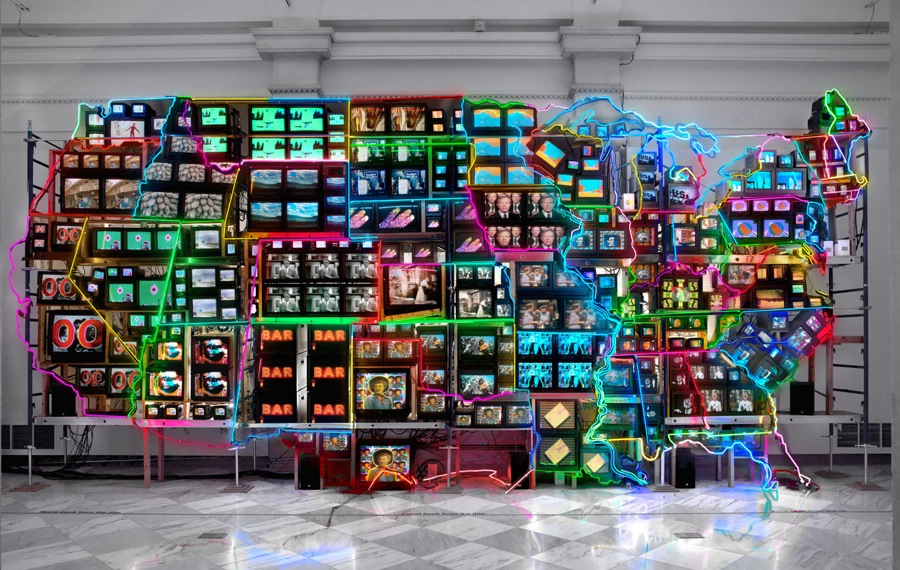

VISIONS 3 CONFERENCE
Focus Features and the Rise of Second-Wave Queer Independent Cinema
KIMBERLY BEHZADI & SUNY OSWEGO
Behzadi explores how recent films released by Focus Features — Brokeback Mountain (Ang Lee, 2005), Milk (Gus Van Sant, 2008), The Kids Are All Right (Lisa Cholodenko, 2010), and Beginners (Mike Mills, 2010) — fulfill genre norms while replacing traditional Hollywood straight protagonists with openly gay protagonists, reflecting a new switch in today’s cultural politics.
Cartesian Perspective of the Hand-Held Camera
KATHERINE COE
Drawing upon the influences of Descartes and Bazin, as well as the Realist school of thought, Coe explores how the hand-held camera in reflexive documentaries stimulates the experience of the bound consciousness as interpreted through Cartesian dualistic thought.
The End of Separate Cinemas: Race in 1949 American Film
FELICITY FLESHER & CARLETON COLLEGE
In 1949, four films were released in America which transcended the norms of so-called “race films” from years prior: Home of the Brave, Lost Boundaries, Pinky, and Intruder in the Dust. Flesher discusses how post-WWII escapism allowed Hollywood to bridge the gap between separate cinemas and integrate African American actors and themes into mainstream films.
Heavy Metal Monster: Reductio Ad Ridiculum and the 1980s Heavy Metal Horror Cycle
BRANDON KONECNY: UNCW
Konecny describes how three films from the 1980s heavy metal horror film cycle — Rocktober Blood (Beverly Sebastian, 1984), Trick or Treat (Charles Martin Smith, 1986), and Black Roses (John Fasano, 1988) — re-contextualize oppositional opinions about the heavy metal subculture through the implementation of self-reflexive humor.
Vertical Thinking: Building Meaning in Film Through Maya Deren and Martin Heidegger
CAITLIN ZERA
Drawing upon Maya Deren’s panel contribution at the 1953 Cinema 16 Symposium and Martin Heidegger’s “Memorial Address” from Discourse on Thinking, Zera uses Deren’s vertical/horizontal investigations theory and Martin Heidegger’s ideas on calculative/meditative thinking to describe how the mechanics of filmmaking contribute to the process of poetically creating meaning in film. This process ultimately reflects cultural shifts in the way modern human beings think, understand, and create when guided by calculative practices instead of meditative. Discussion of the commonalities between the ideas and examination of Deren’s short film At Land serve as the vehicles by which this concept is explored.
Rape Myths in Popular Cinema
JOEY POWELL: UNCW
Utilizing psychological case studies, Powell analyzes how four popular Hollywood films — Straw Dogs (Sam Peckinpah, 1971), Nine 1/2 Weeks (Adrian Lyne, 1986), The Accused (Jonathan Kaplan, 1989), and Thelma and Louise (Ridley Scott, 1991) — reinforce common public misconceptions about rape regarding victim blame.
My Own Private Idaho: Realism and its Discontents
ERIN NUNODA
Nunoda utilizes queer theory, Bakhtinian linguistics, and postmodern psychoanalyses to examine Gus Van Sant’s My Own Private Idaho (1991) as a uniquely developed, medium-pushing example of American Realist filmmaking
A Brief History of the Electronic Image and its Implications for the 21st Century
BEN MCCARTHY: UNCW
McCarthy traces the trajectory of video manipulation from Nam June Paik’s early films to the present day, linking the birth of video to contemporary video art forms and exploring how the impact of consumer-grade digital cameras, editing systems, and internet distribution has lead to a wholly different media landscape. Read more.